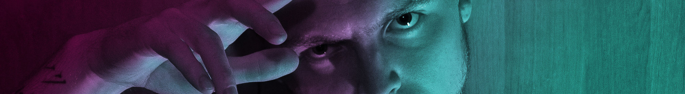

💛 AWALORES — Only 💛
«произведение»
для моей любимой женщины
Что быстро так
Думал: "всё я проиграл"
И не найти счастье никак
А вон как
Поймал тебя
Этот неуместный мрак
И вот начало октября
Погоди
Скажи мне вновь
Шёпот твой меня уносит
Даже в жилах стынет кровь
Обними
Ещё сильней
Хочу время промотать быстрей
Чтоб увидеться с тобой скорей
Убедиться что в порядке
Ибо нет ничего важней
Обогре-е-е-е-е-ей
Всё же очень я хочу
Поскорей-поскорей
Всей душой родная
Подойди по ближе
Я очарован и бездвижен
Медленно сгорая
От тёплых чувств, пылая
Ощущая рядом
Пропитываясь твоим взглядом
Ну же, дорогая
Всей душой родная
Пододвинься ближе
Я хочу слышать как ты дышишь
Медленно сгорая
От тёплых чувств, пылая
Ощущая рядом
Пропитываясь твоим взглядом
Текущий миг
Эти текста в себе нашёл
Этот пергамент как старик
Изложив
Всю суть пером
Тама мысли прямо из души
Покоряя рифм вершины
И
Хочу вручить
Этот маленький куплет зашить
И с тобой всю жизнь прожить
Заметь
В глазах себя
Очень рад началу октября
Детка я люблю тебя
Всей душой родная
Подойди по ближе
Я очарован и бездвижен
Медленно сгорая
От тёплых чувств, пылая
Ощущая рядом
Пропитываясь твоим взглядом
Ну же, дорогая
Всей душой родная
Пододвинься ближе
Я хочу слышать как ты дышишь
Медленно сгорая
От тёплых чувств, пылая
Ощущая рядом
Пропитываясь твоим взглядом